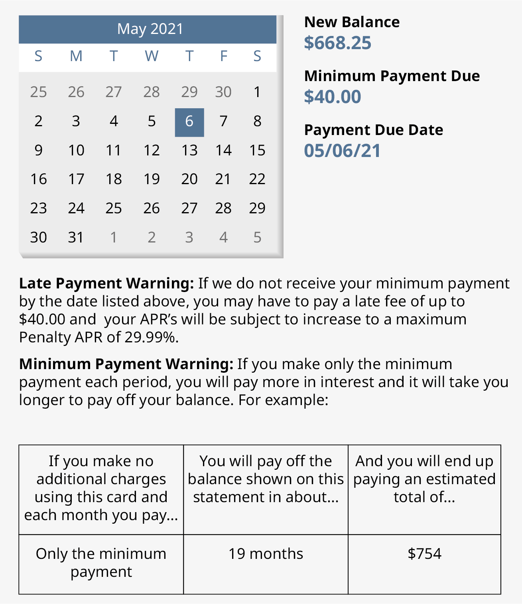
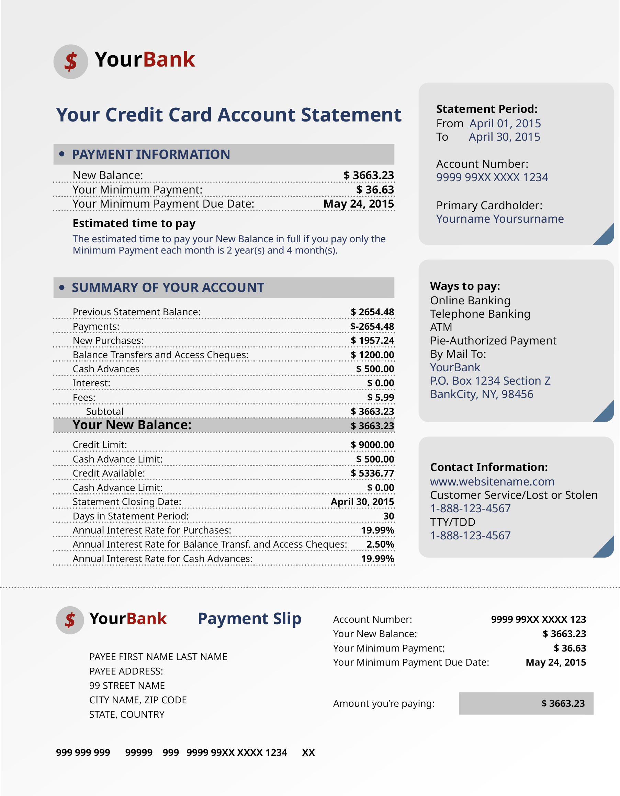

Apply for a credit card armed with basic knowledge.
Distinguish between three basic types of credit cards.
Compare and contrast the benefits and drawbacks of credit cards.
Read and understand the basic parts of a credit card statement.
Compute interest, balance due, and minimum payment due for a credit card.
It can be difficult to get along these days without at least one credit card. Most hotels and rental car agencies require that a credit card is used. There are even a number of retailers and restaurants that no longer accept cash. They make online purchasing easier. And nothing contributes more to a good credit rating than a solid history of making credit card payments on time.
Being granted a credits card is a privilege. Used unwisely that privilege can become a curse and the privilege may be withdrawn. In this section, we will talk about the different types of credit cards and their advantages and disadvantages. The more knowledge a cardholder has about the credit card industry, the better able credit accounts can be managed, and that knowledge may cause major adjustments to a cardholder’s lifestyle.
All credit cards are not equal, but they all represent consumers borrowing money, usually from a bank, to pay for needs and “wants.” As such, they are a type of loan, and your repayment may include interest. (Loans and repayment plans are covered in Section 4.5.)
There are many institutions and credit cards to choose from. Use caution as you shop around for a credit card that suits you. Your top concern is likely the interest rates on purchases and cash advances. But be careful to also read the small print regarding charges for late payments, and other fees such as an annual fee, where the credit card charges you (the cardholder) a fee each year for the privilege of using the cards. Many cards charge no such fee, but there are many that charge modest to heavy fees. Make sure to understand rules for reward programs, where the credit card issuer grants benefits based on one’s spending. Finally, once one applies for and is granted a credit card, pay attention to the credit limit the bank offers. Once a company is owed that much money, use of the card for purchases should be curtailed until some of the debt is paid off.
SubsectionTypes of Credit Cards
There are basically three types of credit cards: bank-issued credit cards, store-issued credit cards, and travel/entertainment credit cards. We will look at all three and explain the good and the bad qualities of each.
Perhaps the most widely used credit card type is the bank-issued credit card, like Visa or MasterCard (and even American Express and Discover cards). These types of cards are an example of revolving credit, meaning that additional credit is extended before the previous balance is paid—but only up to the assigned credit limit. Bank-issued cards are considered the most convenient, as they can be used to purchase anything, including apparel, furniture, groceries, fuel for automobiles, meals, hotel bills, and so on, just as if paying with cash. The interest rates on bank-issued credit cards are usually lower than those for other credit cards we’ll discuss, and the credit limits are generally higher. Currently, bank-issued cards have an average 20.09% APR.
Store-issued credit cards are issued by retailers. One can hardly walk into a store these days without being offered a discount on purchases if one applies for the store credit card. These cards can only be used in that store or family of stores that issues the card. However, if a store credit card is associated with Visa, MasterCard, or American Express, then the card might be used the same way that the bank-issued cards are used. This is called cobranding. The logo of the bank-issued card will be present on the store card. Many stores offer both types. Like other credit cards, they may come with an annual fee.
Store credit cards usually charge higher interest rates than bank-issued cards. Currently, store credit cards have an APR (annual percentage rate) of 24.15%. Any rewards offered by store credit cards are usually limited to purchases made in their own store, and it typically takes longer to accumulate enough rewards or points to redeem them, whereas cobranded credit cards offer opportunities to earn rewards on all purchases, regardless of whether purchases are made in the issuing store or not.
Store credit cards usually offer lower credit limits, at least in the beginning. After being proved to be a responsible credit card owner, credit limits can be raised. Nevertheless, store credit cards are a good choice for those new to the credit card industry. If on-time payments are consistently made, it is an excellent way to get started building a credit history.
Travel and entertainment cards, also known as charge cards, first and foremost offer very high limits or unlimited credit, but they must be paid in full every month. They generally charge high annual fees and impose expensive penalties should a payment be late. On the other hand, they typically have longer grace periods and offer many and various kinds of rewards.
Which type of credit card is paid off every month so has no interest to be paid, but comes with high fees?
Which type of credit cards are the most widely accepted?
Which type of credit cards are the most limited?
Solution.
Charge cards are to be paid off completely each month.
Bank-issued credit cards are the most flexible to use, because they are not limited to which retailers or service providers accept them.
Store issues credit cards are the most limited, since they only work in that family of stores.
Checkpoint4.3.3.
Which type of credit card typically have the highest interest rates?
What should be considered other than interest rate when selecting a card?
Which type of cards typically have high annual fees?
Solution.
Store-issued credit cards
Fees (both annual and penalty fees), reward programs, credit limits
Travel and entertainment cards
SubsectionCredit Card Statements
Cardholders usually receive monthly statements and have 21 days to pay the minimum amount due. The statements itemize and summarize activity on the credit card for that statement’s billing period. The billing period for a credit card is generally a month long, but typically does not start and end on the first and last days of the month. The statement will include the current balance, interest rate, the minimum payment due, and the due date. Be aware, different companies produce statements that are laid out differently. The information will be clearly labeled though.
The due date is a top concern. Missing a due date is one of the worst things a cardholder can do financially, and this is by far the biggest downfall of owning a credit card. Not only is the cardholder subject to late fees, but when a payment is late more than once there is a high probability that the cardholder will be negatively reported to the credit bureaus, which can quickly erode a credit score. Figure 4.3.4 shows an excerpt from an actual statement from a Chase Bank Visa card, based on the current $668.25 balance.

Figure4.3.4.A Credit Card Statement
Specifically pay attention to the late payment penalty and minimum payment warning statements. stating that if no other purchases are made and you continue making only the minimum payment, it will take 19 months to pay off the balance and you will pay \(\$754.00\text{.}\) You can’t say you were not warned.
It is critical that you examine your statement every month because it is always a possibility that your account may have been compromised. If you should notice fraudulent charges on your statement, notifying the credit card company is often enough to have those charges researched by the company and removed. The card with the fraudulent charges will be canceled and a new card with a new account number will be sent to you.
Example4.3.5.
On the credit card statement Figure 4.3.6, identify
The balance due
The minimum required payment
The length of time it takes to pay off the balance by paying the minimum payments and without charging more to the card
The interest rate for purchases

Figure4.3.6.An example credit card statement.
Solution.
The balance due is under the payment information heading and is \(\$3,663.23\text{.}\)
The minimum payment due is also under the payment information heading, and is \(\$36.63\text{.}\)
The time to pay off the balance using only minimum payments is below the payment information, and says it takes 2 years and 4 months to pay off the balance.
The interest rate for purchases is toward the bottom of the statement. It is \(19.99\%\text{.}\)
SubsectionCompute Interest, Balance Due, and Minimum Payment Due for a Credit Card.
Computing all of these values depends on understanding and computing the average daily balance on a credit card. Once that is known, the interest, balance due, and minimum payment can be found.
Above all else, if you pay off the entire balance each month, interest is not charged.
How to Find the Average Daily Balance.
Most credit card companies compute interest using the average daily balance method.
To find the average daily balance on your credit card, determine the balance on the card each day of the billing period (often that month), and take the average. One process to find that average daily balance follows these steps:
Start with a list of transactions with their dates and amounts.
For each day that had transactions, find the total of the transactions for the day. Expenditures are treated as positive values, payments are treated as negative values.
Create a table containing each day with a different balance. The balance is the previous balance plus the day’s total transactions.
Add a column for the number of days those balances until the balance changed.
Add a column that contains the balances multiplied by the number of days until the balance changed.
Find the sum of that last column.
Divide the sum by the number of days in the billing period (often the number of days in the month). This is the average daily balance.
Example4.3.7.Computing Average Daily Balance.
The billing cycle goes from May 1 to May 31. The balance at the start of the billing cycle is \(\$450.21\text{.}\) The list of transactions on the card is below.
Table4.3.8.
Date
Activity
Amount
1-May
Balance
$450.21
10-May
Payment
$120.00
15-May
Groceries
$83.43
26-May
Auto Parts
$45.12
26-May
Restaurant
$85.34
30-May
Shoes
$98.23
Find the average daily balance for the credit card during the month of May.
Solution.
Start with a list of transactions with their dates and amounts. This list is provided.
For each day that had transactions, find the total of the transactions for the day. The only day with more than one transaction was May 26. The sum of those transactions is \(\$130.46\text{.}\) Treating the payment as a negative value, the daily transaction amounts are
Table4.3.9.
Date
Amount
1-May
$450.21
10-May
-$120.00
15-May
$83.43
26-May
$130.46
30-May
$98.23
Create a table containing each day with a different balance. The new table with dates that had different balances is below.
Table4.3.10.
Date
Balance
1-May
$450.21
10-May
$330.21
15-May
$413.64
26-May
$544.10
30-May
$642.33
Now, add a column for the number of days those balances until the balance changed. The days until the balance changes is found by finding the difference in the dates. For instance, from May 15 to May 26 was 11. Adding that column to the table we have
Table4.3.11.
Date
Balance
Days Until Balance Changes
1-May
$450.21
9
10-May
$330.21
5
15-May
$413.64
11
26-May
$544.10
4
30-May
$642.33
2
Add a column that contains the balances multiplied by the number of days until the balance changed. We create the column and multiply the values.
Table4.3.12.
Date
Balance
Days Until Balance Changes
Balance Times Days
1-May
$450.21
9
$4,051.89
10-May
$330.21
5
$1,651.05
15-May
$413.64
11
$4,550.04
26-May
$544.10
4
$2,176.40
30-May
$642.33
2
$1,284.66
Find the sum of that last column. Adding that last column we have a sum of \(\$13,714.04\text{.}\)
There are 31 days in May, so divide the sum by 31, which gives an average of \(\$442.39\text{,}\) which is the average daily balance.
Checkpoint4.3.13.
The billing cycle goes from June 1 to June 30. The previous month’s balance is \(\$563.80\text{.}\) The transactions are in the table below.
Table4.3.14.
Date
Activity
Amount
1-June
Balance
$563.80
2-June
Gasoline
$47.50
2-June
Groceries
$63.42
15-June
Movie
$38.75
15-June
Payment
$250.00
27-June
Pharmacy
$31.21
28-June
Auto Fuel
$48.00
Find the average daily balance for this credit card.
Solution.
\(\$567.32\)
The interest charged for a credit card is based on the daily interest rate of the card, the number of days in the billing cycle, and the average daily balance on the card. We will calculate the interest for a credit card using this formula.
Calculating Interest on a Credit Card.
The interest charge, \(I\text{,}\) for a credit card during a billing cycle is
\begin{equation*}
I = \frac{ADB\times r\times d}{365}
\end{equation*}
where \(ADB\) is the average daily balance, \(r\) is the annual percentage rate, and \(d\) is the number of days in the billing cycle. As before, interest is rounded up to the next penny.
Example4.3.15.
Compute the interest charged for the credit card based on the given average daily balance (ABD), annual interest rate, and number of days in the billing cycle.
\(ADB = \$2,765.00\text{,}\) annual interest rate \(13.99\%\text{,}\) billing cycle of \(30\) days
\(ADB = \$789.30\text{,}\) annual interest rate \(17.99\%\text{,}\) billing cycle of \(31\) days
\(ADB = \$1,037.85\text{,}\) annual interest rate \(11.99\%\text{,}\) billing cycle of \(28\) days
Solution.
Substituting \(\$2,765.00\) for \(ADB\text{,}\)\(0.1399\) for \(r\text{,}\) and \(30\) for \(d\) and calculating, we find the interest charge to be
Substituting \(\$789.30\) for \(ADB\text{,}\)\(0.1799\) for \(r\text{,}\) and \(31\) for \(d\text{,}\) and calculating, we find the interest charge to be
Compute the interest charged for the credit card based on the given average daily balance (ABD), annual interest rate, and number of days in the billing cycle.
\(ADB = \$2,135.00\text{,}\) annual interest rate \(12.9\%\text{,}\) billing cycle of \(30\) days
\(ADB = \$1,589.63\text{,}\) annual interest rate \(9.99\%\text{,}\) billing cycle of \(31\) days
\(ADB = \$6,803.41\text{,}\) annual interest rate \(14.9\%\text{,}\) billing cycle of \(28\) days
Solution.
\(\displaystyle \$22.64\)
\(\displaystyle \$13.49\)
\(\displaystyle \$77.77\)
Calculating the Balance on a Credit Card.
The balance, or sometimes balance due, on a credit card is the previous balance, plus all expenses, minus all payments and credits, plus the interest on the card. As stated before, if the card was paid off, there is no interest to be paid.
Example4.3.17.
Find the balance on the credit card with the given interest charge and balance before interest was charged. The cards were not paid off previously.
Balance before interest is \(\$708.50\text{,}\) interest charge is \(\$8.15\)
Balance before interest is \(\$1,395.10\text{,}\) interest charge is \(\$21.32\)
Solution.
Adding the balance before interest to the interest charge, we find the balance to be \(\$716.65\text{.}\)
Adding the balance before interest to the interest charge, we find the balance to be \(\$1,416.42\text{.}\)
Checkpoint4.3.18.
Find the balance on the credit card with the given interest charge and balance before interest was charged. The cards were not paid off previously.
Balance before interest is \(\$560.00\text{,}\) interest charge is \(\$6.44\)
Balance before interest is \(\$3,218.00\text{,}\) interest charge is \(\$49.17\)
Solution.
\(\displaystyle \$566.44\)
\(\displaystyle \$3,267.17\)
The next example puts all those steps together.
Example4.3.19.Find Balance Due from Transactions and Interest Rate.
Kaylen’s credit card charges \(16.9\%\) annual interest. His current billing period is from November 1 to November 30. The balance on November 1 was \(\$1,845.23\text{.}\) Use Kaylen’s following transactions to determine his balance due at the end of the billing cycle.
Table4.3.20.Kaylen’s Transactions
Date
Activity
Amount
1-Nov
Billing Date Balance
$1,845.23
3-Nov
Groceries
$78.50
4-Nov
Tablet
$159.00
4-Nov
Online Game Purchase
$39.99
4-Nov
Restaurant
$47.10
10-Nov
Payment
$300.00
13-Nov
Gasoline
$58.75
13-Nov
Clothing
$135.00
18-Nov
Gift
$30.00
18-Nov
Restaurant
$21.75
28-Nov
Gasoline
$43.79
Solution.
The first step is to find Kaylen’s average daily balance. To find the average daily balance, we use the following steps.
Start with a list of transactions with their dates and amounts. This list is provided.
For each day that had transactions, find the total of the transactions for the day. The days with more than one transaction were Nov. 4, Nov. 13, and Nov. 18. Treating the payment on November 10 as a negative value, the daily transaction amounts are
Table4.3.21.
Date
Amount
1-Nov
$1,845.23
3-Nov
$78.50
4-Nov
$246.09
10-Nov
-$300.00
13-Nov
$193.75>
18-Nov
$51.75
28-Nov
$43.79
Create a table containing each day with a different balance. The new table with dates that had different balances is below.
Table4.3.22.
Date
Balance
1-Nov
$1,845.23
3-Nov
$1,923.73
4-Nov
$2,169.82
10-Nov
$1,869.82
13-Nov
$2,063.57
18-Nov
$2,115.32
28-Nov
$2,159.11
Now, add a column for the number of days those balances until the balance changed. The days until the balance changes is found by finding the difference in the dates. For instance, from May 15 to May 26 was 11. Adding that column to the table we have.
Table4.3.23.
Date
Balance
Days Until Balance Changes
1-Nov
$1,845.23
2
3-Nov
$1,923.73
1
4-Nov
$2,169.82
6
10-Nov
$1,869.82
3
13-Nov
$2,063.57
5
18-Nov
$2,115.32
10
28-Nov
$2,159.11
3
The last entry was 3 since there are 30 days in November (the 28th, 29th, and 30th).
Add a column that contains the balances multiplied by the number of days until the balance changed. We create the column and multiply the values.
Table4.3.24.
Date
Balance
Days Until Balance Changes
Balance Times Days
1-Nov
$1,845.23
2
$3,690.46
3-Nov
$1,923.73
1
$1,923.73
4-Nov
$2,169.82
6
$13,018.92
10-Nov
$1,869.82
3
$5,609.46
13-Nov
$2,063.57
5
$10,317.85
18-Nov
$2,115.32
10
$21,153.20
28-Nov
$2,159.11
3
$6,477.33
Find the sum of that last column. Adding that last column we have a sum of \(\$62,190.95\text{.}\)
There are \(30\) days in November, so divide the sum by \(30\text{,}\) which gives an average of \(\$2,073.03\text{,}\) which is the average daily balance.
With the average daily balance, we can determine the interest that is charged for November. Substituting \(ADB = \$2,073.03\text{,}\)\(r = 0.169\text{,}\) and \(d = 30\) into the formula \(I=\frac{ADB\times r\times d}{365}\) and calculating, we find the interest to be
This interest is added to the final balance from the table in step 3, \(\$2,159.11\text{,}\) which yields a balance due of \(\$2,101.83\text{.}\)
Checkpoint4.3.25.
Angel’s credit card charges \(16.9\%\) annual interest. His current billing period is from August 1 to August 31. The balance on August 1 was \($982.45\text{.}\) Use Angel’s following transactions to determine his balance due at the end of the billing cycle.
Table4.3.26.Angel’s Transactions
Date
Activity
Amount
1-Aug
Billing Date Balance
$982.45
5-Aug
Food
$125.31
13-Aug
Payment
$500.00
14-Aug
Gasoline
$51.65
14-Aug
Pizza
$36.99
14-Aug
Shoes
$89.45
19-Aug
Electric bill
$178.3
21-Aug
Internet
$36.99
21-Aug
Food
$93.45
30-Aug
Gasoline
$43.18
Solution.
\(\$1,152.35\)
The Minimum Payment Due.
The minimum payment due is the smallest required amount to be paid on a credit card to avoid late fees and penalties, such as an increased interest rate. The calculations for this may differ from card to card. They also depend in the balance of the credit card. General guidelines for minimum payment due are:
For larger balances (usually over \(\$1,000\)), the minimum payment will be some percentage of the balance due.
For moderate balances (between \(\$25\) and \(\$1,000\)), the minimum would be a specified dollar amount. \(\$25\) seems to be a common value.
If the balance is small (under \(\$25\) for instance), then the minimum payment is the balance.
Those are just guidelines. Individual cards may vary in these values.
Minimum payments should only be paid if money is short in a given month. The length of time to pay off a credit card using minimum payments is quite long, and results in paying a lot of interest. It is strongly discouraged.
Example4.3.27.Calculate the Minimum Payment Due.
The FYA credit card company has the following minimum payment policy. For balances over \(\$1,000\text{,}\) the minimum payment is \(2.5\%\) of the balance due plus fees, but not interest. For balances between \(\$500.00\) and \(\$999.99\text{,}\) the minimum payment is \(\$50.00\text{.}\) For balances \(\$499.99\) and under, the minimum payment is \(\$25.00\) or the balance due, whichever is smaller.
In the following, calculate the minimum payment due given the credit card minimum payment policy, the balance due and fees charged.
Balance due is \(\$1,309.00\text{,}\) no fees
Balance due is \(\$265.50\text{,}\)\(\$35\) in fees
Balance due is \(\$784.90\text{,}\) no fees
Solution.
The balance is over \(\$1,000\text{,}\) so the minimum payment is \(2.5\%\) of the balance due plus fees. Observe that \(2.5\%\) of the balance due is \(0.025\times\$1,309.00=\$32.73\text{.}\) Since there are no fees, the minimum payment due is \(\$32.73\text{.}\)
The balance is under \(\$499.99\text{,}\) so the minimum payment due is \(\$25.00\text{.}\)
The balance is between \(\$500.00\) and \(\$999.00\text{,}\) so the minimum payment due is \(\$50.00\text{.}\)
Checkpoint4.3.28.
The CLH credit card company has the following minimum payment policy. For balances over \(\$1,000\text{,}\) the minimum payment is \(1\%\) of the balance due plus interest and fees. For balances between \(\$25.00\) and \(\$999.99\text{,}\) the minimum payment is \(\$25.00\) plus any fees. For balances under \(\$25.00\text{,}\) the minimum payment is the balance due plus any fees.
In the following, calculate the minimum payment due given the credit card minimum payment policy, the balance due and fees charged.
Balance due is \(\$2,308.00\text{,}\) billing cycle interest is \(\$24.39\text{,}\) no fees
Balance due is \(\$265.50\text{,}\)\(\$59.00\) in fees